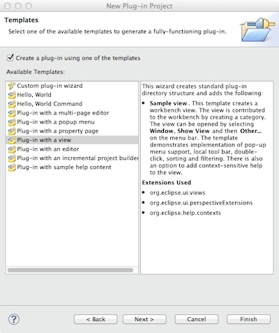

Creating a VTK View Inside Eclipse
Creating a "view" in Eclipse isn't too hard. But there are a few tricks here and there, so it's worth running through how to build the simplest view using VTK to render the model.
The first step is to use Eclipse' wizards to create a sample project.
In Eclipse, choose File/New -> Project...
Select "Plugin Project Development" then "Plug-in Project..."
You'll be presented with a dialog asking for a name, specify something (I often go with "Zot" :-)
Then choose next:
Finallly, choose next again to see the wizard choices:

Choose a simple plugin with a view. In fact, Eclipse will add some other code we don't need (having to do with help contexts) but that's OK, we'll just delete it. I strongly encourage you to go back and build/examine all the various examples, but for now let's stick with what we need.
The resulting plugin is very simple. There are only two source code files and the plugin.xml file. The plugin.xml looks like this:
<plugin>
<extension point="org.eclipse.ui.views">
<category name="VTK Views" id="com.geofx.vtk.view"/>
<view
name="VTK View"
icon="icons/vtk-logo_16.png"
category="com.geofx.vtk.view"
class="com.geofx.vtk.view.VTKView"
id="vtk_view.views.VTKView">
</view>
</extension>
<extension point="org.eclipse.ui.perspectiveExtensions">
<perspectiveExtension
targetID="org.eclipse.ui.resourcePerspective">
<view
ratio="0.5"
relative="org.eclipse.ui.views.TaskList"
relationship="right"
id="vtk_view.views.VTKView">
</view>
</perspectiveExtension>
</extension>
</plugin>
This just tells Eclipse that you want to create a category called "VTK Views" and you will define one view for it, which will be implemented in a class named VTKView.
There are two source files: Activator.java and VTKView.java. The Activator is just the single instance startup file. The only change we have to make to it is to add the the method LoadLibraries() to the start() method so our native libraries get loaded.
The VTK View file is almost as simple. It ony has one real method. It doesn't need a constructor (the default is fine) and the class it is derived from ViewPart, requires a setFocus() method be implemented, but we don't need so just leave it empty. The only method that we need to modify is CreatePartControl:
public void createPartControl(Composite parent)
{
// some systems have weird rendering artifacts if you don't set this property
System.setProperty("sun.awt.noerasebackground","true");
// instantiate the SWT composite for the drawing
// we can't use the default Composite because using the AWT bridge
// requires that it have the property of SWT.EMBEDDED
Composite composite = new Composite(parent, SWT.EMBEDDED);
// set the layout so our canvas fills the whole control
composite.setLayout(new FillLayout());
// create the special frame bridge to AWT
java.awt.Frame awtFrame = SWT_AWT.new_Frame(composite);
// build VTK Pipeline
vtkConeSource cone = new vtkConeSource();
cone.SetResolution(20);
cone.SetHeight(0.3);
cone.SetRadius(0.1);
vtkPolyDataMapper coneMapper = new vtkPolyDataMapper();
coneMapper.SetInputConnection(cone.GetOutputPort());
vtkActor coneActor = new vtkActor();
coneActor.SetMapper(coneMapper);
// VTK rendering part
vtkAwtComponent awtWidget = new vtkAwtComponent();
awtWidget.getRenderer().AddActor(coneActor);
// finally, add our vtk widget as a child of the frame
awtFrame.add(awtWidget.getComponent());
}
The first line isn't always needed but some systems exhibit weird artifacts (partial erasure or blinking) if you don't. YMMV.
Then the SWT composite is instantiated. SWT is Eclipse's Standard Widget Toolkit, a very thin platform-specific widget set that mimics as closely as possible the actual platform widgets. Composite is the fundamental drawing surface for all SWT widgets. We then set the simplest layout, which tells SWT to use up all the drawing surface.
Then the crux of this method the special AWT to SWT bridge. This class allows one to embed AWT widgets inside a SWT widget (and vice versa, but we don't care about the other way). We pass in our SWT composite and the result is we get back a valid AWT Frameinto which we can embed our AWT-based VTK widget.
The next part is standard VTK, we create the pipeline which is all embedded in a awtVtkComponent.
Finally, we get the AWT widget's component (essentially the drawing surface) and we add it to the AWT frame we created. And that's it. Let's see what it looks like.
Go to Run/Run Configurations.... That brings up a Launch configuration dialog:
You can leave everything as-is, but you probably want to change the Name to something usefule like "workbench" (which is, in fact, what is being launched). Then select the program arguments tab and add the path to the location of the VTK native libraries (see previous chapter).
The select "Run" (which will automatically save the launch config) and you'll get another instance of Eclipse launched. The first time you do this you'll see the Eclipse welcome screen. Just select the "Go to Workbench" button and you'll be presented with the Eclipse workbench. Select Window/Show View/Other... then find the VTK Views category, open the twisty and there is VTK View. Double-click and your view, complete with Cone will appear in the lower right. Why in the lower right? Because that's what the XML in the plugin XML told it to do. In a later chapter will set up an Eclipse perspective and do it right, but this is fiine for now. To see the cone is all it's glory, double-click on the tab where it says VTK View and the view will fill the whole workbench. (Note this a handy feature which applies to every view. Double click on the tab again to restore the previous size and position.)
Note that the widget is alive and well, try rotating the cone to verify.
And that's it. Now, while this is very useful, it's just the beginning. One of the areas we want to look at is trying out the various examples and demos. If we have to create a new View for every one AND create a new launch config, etc. it will get very tedious. Instead, let's explore using the OSGI bundle feature of Eclipse and Java's ability to dynamically instantiate classes at runtime to make this a LOT easier.
Next Chapter: Creating a VTK Scene in Eclipse